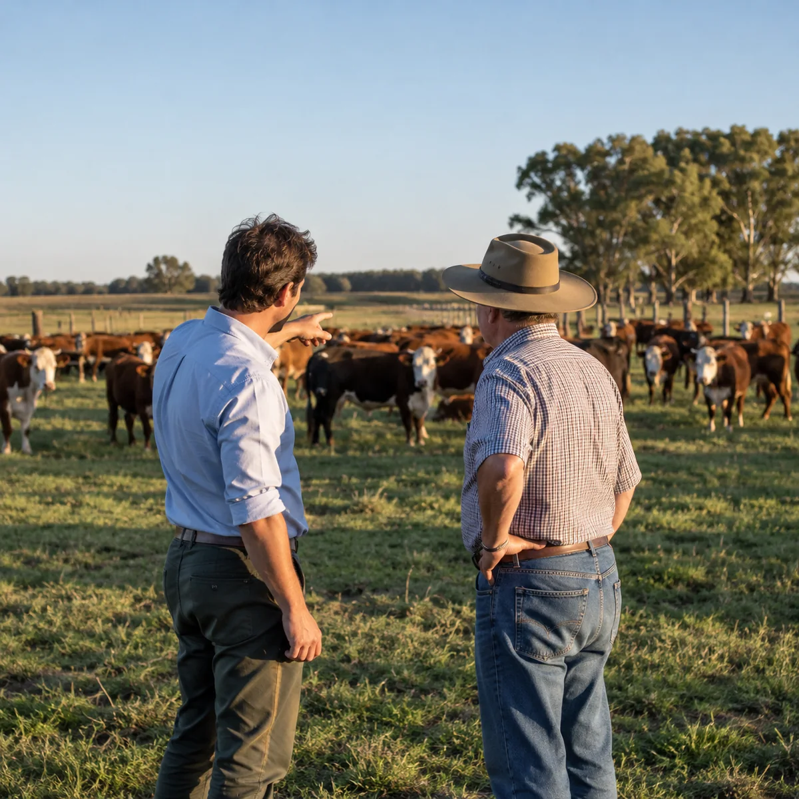
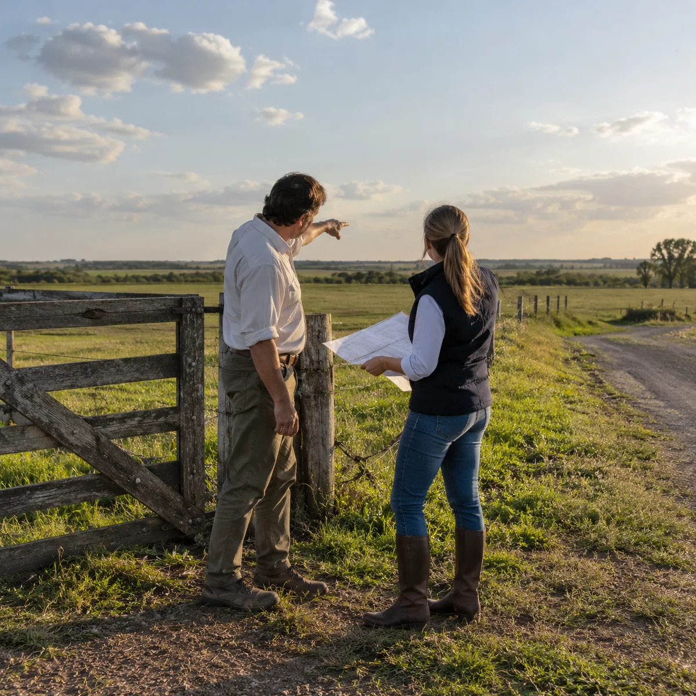
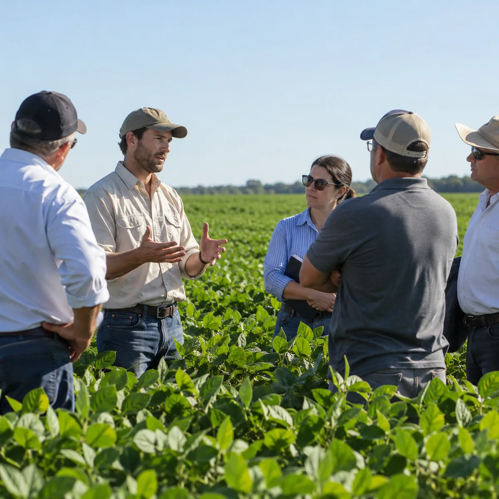

01 / Terra
Campos
Asesoramiento agropecuario para quienes gestionan un campo y buscan una mirada técnica sobre su actividad.
Conocer el servicioAsesoramiento agropecuario para campos, establecimientos ganaderos e inmobiliarias. Cursos, charlas e información del mundo agropecuario.
Campos · Ganadería · Inmuebles rurales · Conocimiento
Conocé nuestro enfoque Territorio & conocimiento
Territorio & conocimientoTerra asesoramiento es una empresa dirigida por un ingeniero agrónomo. Nuestro trabajo reúne asesoramiento para campos, establecimientos ganaderos e inmobiliarias, junto con cursos, charlas e información del sector.
El primer paso es escuchar tu consulta y conocer el contexto en el que trabajás.
Conocé TerraTrabajamos con quienes toman decisiones en el campo y con quienes necesitan comprender mejor una actividad o un inmueble rural.
Asesoramiento agropecuario para quienes gestionan un campo y buscan una mirada técnica sobre su actividad.
Conocer el servicio
Acompañamiento profesional para consultas de establecimientos dedicados a la actividad ganadera.
Conocer el servicio
Asesoramiento agropecuario para inmobiliarias que trabajan con campos e inmuebles rurales.
Conocer el servicio
Espacios para compartir información y conversar sobre temas del mundo agropecuario.
Conocer el servicioYa sea por un campo, un establecimiento ganadero, un inmueble rural o una charla, escribinos y conversemos.